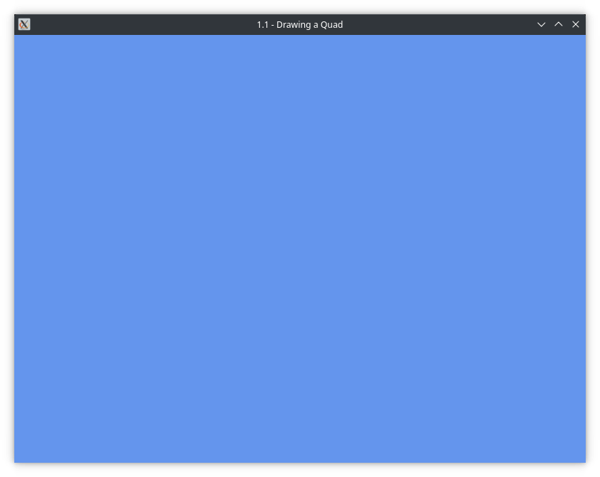
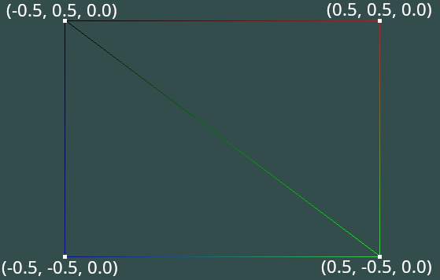
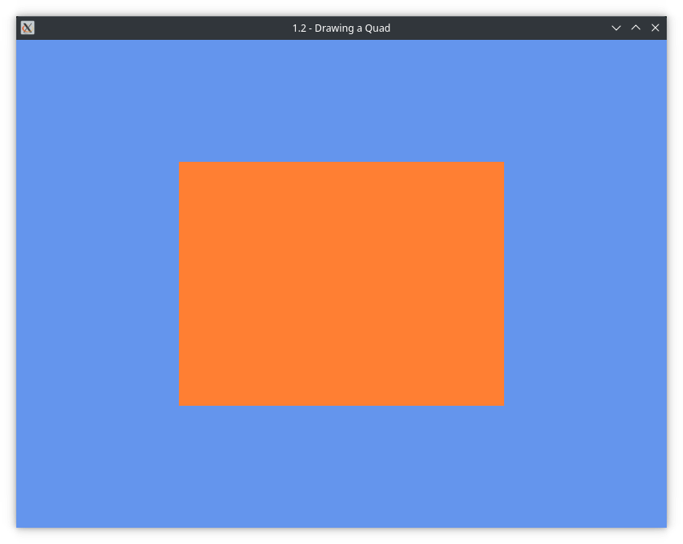

1.2 - Hello Quad
Info
You can view the source code for this tutorial here. This tutorial builds on the previous tutorial. If you haven't read it, you can do so here.
Let's draw something on-screen! In this tutorial, you'll learn:
- How to initialize OpenGL.
- How to clear the window.
- How the OpenGL pipeline works.
- What vertex array objects, vertex buffers, and element array buffers are, and how to use them.
- How to create and use shaders.
- How to draw to the screen.
This tutorial will feature a lot of content and new info, so we'll take it slow and with lots of explanations.
Initializing OpenGL
The first thing we need to do before we can issue OpenGL commands, is to initialize it. Fortunately, Silk.NET windowing does most of the hard part for us, and we only have to get the GL api.
Add the following using directive to the top of your file, you'll need this to use OpenGL:
using Silk.NET.OpenGL;
Then, at the top of your class, add the following:
private static GL _gl;
Finally, in your OnLoad method, add the following:
_gl = _window.CreateOpenGL();
What are we doing here? Silk.NET requires you to keep a reference to the OpenGL API. If you've used or seen OpenGL in C, you'll notice that this is different to the way that it is done there. This is done so that you can more easily keep track of multiple contexts. If you don't know what that is, don't worry about it for now, we won't be using it in these tutorials.
Info
If you take a look at the source in the Silk.NET samples repository, you will notice that it uses _gl = GL.GetApi(_window). This is another way to get the GL API, however when using Silk.NET windowing, it's recommended that you use _window.CreateOpenGL() instead.
Now, run your application again. If all is good, you should see no change. Awesome! Let's do our first steps in OpenGL: Clearing the window.
Clearing the window
Before we start this, let's take a look at what makes up an OpenGL window.
A window contains at least two framebuffers. A framebuffer is a set of textures that can be rendered to. An OpenGL window's framebuffer consists of the following textures:
- Color texture
- Depth stencil texture
Info
The technical name for these textures is buffers. For simplicity reasons we will call them textures here, as to not confuse you with the buffers we use later in the tutorial.
On top of this, a window will contain at least two of these framebuffers. This is known as double-buffering and is imperative for rendering to work properly. One buffer is displayed, while another is rendered to. They are then swapped between once the GPU is ready.
This is what makes up the swapchain, which, if you've ever looked into Direct3D, you should be familliar with. OpenGL does not use the term, nor does it allow you to manage this yourself, however it is still in the background, and it is helpful to know this.
Now that we know this, we can get on with clearing the window.
Add the following using directive to the top of your file:
using System.Drawing;
Then, in your OnLoad method, add the following:
_gl.ClearColor(Color.CornflowerBlue);
You may notice that this function contains various overloads, including ones for a System.Numerics.Vector4, and 4 floats. We'll be using the overload that takes System.Drawing.Color, because it is the easiest to use and understand.
If you run your application now, you'll notice that the window is still black. That's because we've set the clear color, but not actually told OpenGL to clear the window.
In your OnRender method, add the following:
_gl.Clear(ClearBufferMask.ColorBufferBit);
Run your application again, and you should see a lovely sky blue window!

Congrats! You've done your first thing in OpenGL! Didn't work? Check the source code for this section here.
But - how does OpenGL know to color the window blue? Sure, we've told it we want blue - but we only did that once... How does it know to keep using blue?
Well, this is because OpenGL is a state machine.
OpenGL: The state machine
Before we can continue further, you'll have to get used to the concept that OpenGL is a state machine. It's really hard to understand OpenGL if you don't understand this, so read closely.
What is a state machine?
At its core, a state machine holds... state. You set the state of something, and it retains that state until you change it.
This is exactly how OpenGL works. Once you set something, it will remain set until you change it. This counts for everything in OpenGL. Clear color, binding objects, etc etc, everything goes through the state machine. You can manipulate the current state, however you have to be wary at all times of what part of the state you are changing. Change the wrong thing and suddenly you program might not work!
So, this explains why clearing the window works. You set the clear color, and it remains as the clear color until you change it.
Now that we've got that, let's move on!
Vertex Array Objects (VAOs)
A unique feature that modern OpenGL has is what is known as a Vertex Array Object, or VAO. It stores all the necessary information required to draw an object to the screen, such as the vertex data (which we'll get into in a minute), and also information on how to read this data.
This is a required feature of modern OpenGL. You must have a VAO bound, otherwise your application won't work.
Let's create the VAO!
At the top of your class, add the following:
private static uint _vao;
Then, in your OnLoad method, add:
_vao = _gl.GenVertexArray();
_gl.BindVertexArray(_vao);
What's going on here? First, we generate the VAO. Then, before we can use, or update it, we need to bind it.
Binding is a term you will hear a lot with OpenGL, and in these tutorials too. Binding essentially means updating the current OpenGL state with the given object. So, in this example, when we bind the VAO, we update OpenGL's state so that the VAO in the state machine is now the VAO we have just created. If you don't bind an object before updating/using it, you will use or update the previously bound object instead, which can cause problems and headaches later.
We're now ready to give the VAO some data. But first, we need a vertex buffer.
Vertex Buffer Objects (VBOs)
Here is the part where we actually give the GPU some data it can work with. For most graphics applications, a vertex buffer is required to display anything on screen.
What is a vertex buffer?
Before we can continue, it's handy to know what a vertex buffer is, and what it does.
Let's define both vertex, and buffer.
- Vertex - A point where two lines, or edges meet.
- Buffer - A region in memory that can be accessed to be written to, or read from.
Knowing these definitions should give us a good idea of what a vertex buffer is. It's a region of memory, on the GPU, that stores points, which will get rasterized on-screen (usually in the form of triangles).
Vertex data
Let's create the data that we will fill the vertex buffer with!
In your OnLoad function, just after you call _gl.BindVertexArray(), add the following:
float[] vertices =
{
0.5f, 0.5f, 0.0f,
0.5f, -0.5f, 0.0f,
-0.5f, -0.5f, 0.0f,
-0.5f, 0.5f, 0.0f
};
What makes up a quad?
In modern graphics programming, you are expected to use triangles, lines, or points. While you may see options for quads, these are obsolete.
Therefore, a quad is made of two right-angle triangles. This can best be seen if we view the result in wireframe mode.

In the image, you can also see where the four vertices go in relation to the quad. While you won't usually be defining vertices yourself, it's still handy to know how it works.
Creating the buffer
Now that we've got our vertex data, let's create the buffer!
At the top of your class, add the following:
private static uint _vbo;
Then, in your OnLoad method, under where the vertices are defined, add:
_vbo = _gl.GenBuffer();
_gl.BindBuffer(BufferTargetARB.ArrayBuffer, _vbo);
Much like the VAO, we need to first generate the buffer, and then bind it. Unlike vertex arrays, however, buffers need to be bound to a target. This allows you to bind buffers to different targets at the same time. Some of the more common targets include:
ArrayBuffer- The vertex buffer target (which is what we're using here).ElementArrayBuffer- The element array buffer target (which you'll see later).UniformBuffer- A uniform buffer, not used in this tutorial, but we'll get to it in a later tutorial.
In this case, we're binding to ArrayBuffer since we're creating a vertex buffer.
Filling our buffer with data
Let's fill our buffer with some data! Before we do that though, you need to be aware of unsafe in C#.
Unsafe C#
Silk.NET heavily uses unsafe code. Don't worry, this won't make your computer explode, however it does exit out of the "memory safe" managed environment of C#, and enters a realm where undefined behavior, segmentation faults, and strange results are more likely to occur if you are not careful. Since we're working with low-level APIs, and OpenGL is defined in plain C, some unsafe code will be necessary in order for us to be able to communicate with it from C#.
Info
If you wish to use Span instead, and remain in safe mode, Silk.NET does support these too. However, I will be using unsafe in this tutorial instead, as this is both what I personally use, as well as what the samples use.
Unsafe mode is not enabled by default, so we need to enable it. To enable it:
- If you're on Visual Studio 2022, open your project properties and under Build --> General, make sure the box that says "Unsafe code" is checked.
- You can also edit your project's
.csprojfile manually, by adding an<AllowUnsafeBlocks>true</AllowUnsafeBlocks>inside the<PropertyGroup>.
This will now allow you to use the unsafe keyword, which allows a block of code to contain unsafe code. You now MUST add unsafe to your OnLoad and OnRender methods, like so:
public static unsafe void OnLoad() { ... }
If you forget to do either of these, you'll get compile errors. While our OnRender method does not contain any unsafe code yet, it will when we draw to the screen later, so it's best just to do it now so you don't forget to do it later.
Now let's fill the buffer!
Add the following to your OnLoad method:
fixed (float* buf = vertices)
_gl.BufferData(BufferTargetARB.ArrayBuffer, (nuint) (vertices.Length * sizeof(float)), buf, BufferUsageARB.StaticDraw);
Let's go over what's going on here. First, we fix the vertex data. This prevents the garbage collector from moving it around, so we can take a pointer to the data. We then call _gl.BufferData and tell it the target we want, ArrayBuffer in this case, give it the data length (measured in bytes), the buffer pointer, and we choose StaticDraw for our usage hint.
What is a usage hint? A usage hint simply tells the GPU how we plan on using this data. These are some of the most common usage hints you'll use in an OpenGL application:
- StaticDraw - Set the data once, and it can only be read from by the GPU (in this case for drawing)
- DynamicDraw - Similar to StaticDraw, however the data will be set & updated more than once.
There are a lot more usage hints, including StreamDraw and variants of these hints with XyzCopy and XyzRead, but they are not as common in most OpenGL applications. On top of this, the usage hint is only a hint. Most OpenGL drivers interpret these hints the same way, and it is perfectly valid to set the data with a StaticDraw hint. However, you should still get into the practice of using the correct usage hint, as some APIs such as Direct3D do care about the hint you use.
Now, run the program again, and if you get the same blue window, you've set the buffer data successfully!
Now, let's create the element buffer object.
Element Buffer Objects (EBOs)
Unlike a vertex buffer, an element buffer is not strictly required to display something on screen, however not using it in some cases may require making your vertex buffer a lot larger, with a lot more duplicate data.
For those familliar with Direct3D terms, EBOs are more commonly referred to as index buffers, which is what this tutorial will refer to them from now on.
Take a look at the vertices array we defined earlier. You may have noticed that it only has four different points in it. Great! That's how you make a quad. But remember - that's not how this works. As mentioned earlier, a quad is made up of two triangles. But wait - that's six points... But we've only defined four. What's going on?
Well, that's where index buffers come in! An index buffer simply tells the GPU which points in the vertex buffer to use for each triangle.
Add the following to your OnLoad method:
uint[] indices =
{
0u, 1u, 3u,
1u, 2u, 3u
};
Now, you may be looking at this thinking "what is this?". Don't worry, once you know what it's doing it's quite easy to wrap your head around.
You'll notice that it contains 6 values. These values correspond to an index in our vertex buffer (notice how the maximum value is 3, which is the maximum index in our vertex buffer.)
Take a look at the image you saw earlier. The points are representitive of a value in the vertex buffer. If you trace each point, you'll see it's in clockwise order (top left is the first point, bottom left is the last point). Assign each of these an incrementing value from 0-3. Then, trace out the indices we defined above. You may notice that you'll trace out two triangles, making up our quad.
Great! Hopefully you now have a better understanding of how index buffers allow you to reduce the amount of duplicate data in the vertex buffer. If we didn't use an index buffer, we'd have to define the top left, and bottom left points twice!
Creating the buffer
Creating the EBO is very similar to creating a vertex buffer.
First, we must create and bind the buffer itself. Add the following to your OnLoad method:
_ebo = _gl.GenBuffer();
_gl.BindBuffer(BufferTargetARB.ElementArrayBuffer, _ebo);
Then, we fill the buffer with data, much in the same way as we did with the vertex buffer.
Again, add the following to your OnLoad method:
fixed (uint* buf = indices)
_gl.BufferData(BufferTargetARB.ElementArrayBuffer, (nuint) (indices.Length * sizeof(uint)), buf, BufferUsageARB.StaticDraw);
And that's it! In OpenGL, this is the common way you'll create buffers, from VBOs, to EBOs, to UBOs.
Run the program again, and if you still see the blue window, you've successfully created the EBO!
Now we can move onto the shader.
Shaders
This tutorial won't go fully into detail about what shaders are and how they work, instead we'll leave that for a later tutorial, but in essence, a shader is a small program that runs on your GPU, that tells it how to process and display the data in our buffers.
There are many different types of shaders:
- Vertex
- Fragment (or Pixel, as used by Direct3D)
- Geometry
- Compute
- Tessellation
These shaders all serve different purposes, however the most commonly used shaders are the vertex and fragment shaders, and we will be using those in this tutorial.
A vertex shader is run (invoked) for every vertex in the vertex buffer. The vertex buffer is where you perform transformations such as translating, rotating or scaling and object. Once the vertex shaders are done running, our vertices are arranged into primitives (in our case, triangles), and the on-screen pixels these triangles occupy are filled by fragment shaders. This process is called rasterization.
The fragment shader is invoked for every fragment of every primitive on screen. A fragment is essentially a pixel, and Direct3D even calls them pixel shaders. As you may expect, these shaders are a lot more intensive than vertex shaders, and can often be the cause of GPU slowdowns, given that a single triangle may only invoke three vertex shaders, but can result in hundreds or thousands of fragment shader invocations!
Fragment shaders is where you perform the stuff that gets displayed on screen, such as texturing and many forms of lighting.
For the moment, this is all you need to know about shaders. You will learn more about shaders as we progress further in this tutorial, as knowing how shaders work and operate is a vital thing to know when it comes to modern graphics programming. The sky is the limit! (Or in our case, an endless cornflower blue void...)
The shader code
Before we can create our shader objects, we need some shader code. OpenGL uses GLSL (OpenGL Shading Language). Syntactically, it is quite similar to C. Don't worry though, there are no pointers in sight.
Creating the vertex shader
Add the following to your OnLoad method:
const string vertexCode = @"
#version 330 core
layout (location = 0) in vec3 aPosition;
void main()
{
gl_Position = vec4(aPosition, 1.0);
}";
This is our vertex shader! Let's go through it line-by-line.
First, we must tell it which GLSL version we wish to use. Since OpenGL 3.3 (the version we are using), the GLSL version corresponds to the OpenGL version. We tell it we want core, as we are using Core OpenGL 3.3, rather than compatibility.
Next, we define our shader attributes. In our example, we only have one, which is the position we defined in the vertex buffer. Remember - the vertex shader is executed for each vertex in the vertex buffer, which is why we only need one value at a time. We define it at a manual "location", 0. While this is not necessary, we will be using it in this tutorial, as certain drivers (such as intel) like to use random locations if you do not specify one, which can cause many problems if you are not careful.
Much like C, we define our entry point, the main function. In it, we set the value of gl_Position to the vertex position. As we are not performing any transformations, we simply set the input value directly to the output value. gl_Position, which is a built-in shader variable, only accepts a vec4 value though, so we must convert aPosition to vec4 first. You may notice we use 1.0 for the W value instead of 0.0 though. While in this case it does not matter, it's a habit you should get into, as this will become very important when we start using matrices and transformations.
Creating the fragment shader
Our fragment shader for this example is very simple.
Add the following to your OnLoad method:
const string fragmentCode = @"
#version 330 core
out vec4 out_color;
void main()
{
out_color = vec4(1.0, 0.5, 0.2, 1.0);
}";
In our fragment shader, we simply output a single color, in this case a reddish-orange.
Because our fragment shader is so simple, we don't use any in attributes for this example. However, unlike a vertex shader, a fragment shader must always have at least one out attribute. This attribute is the output color of the fragment shader itself, and must always be assigned a value. (We'll get more into this in a later tutorial). The output color is in the RGBA format. In OpenGL, the output color in the fragment shader is a normalized 32-bit float. Therefore, each of the RGBA values must be between 0 and 1. This is also true for our clear color too, however Silk.NET handily accepts a System.Drawing.Color, which we are using in this tutorial.
Creating the shader objects
Let's create the shader objects!
Add the following to your OnLoad method:
uint vertexShader = _gl.CreateShader(ShaderType.VertexShader);
_gl.ShaderSource(vertexShader, vertexCode);
First, we create the shader object itself. Each shader object must be assigned a type, in this case the vertex shader. Then we simply give the shader the code we defined earlier.
Now we need to compile the shader.
Add the following to your OnLoad method:
_gl.CompileShader(vertexShader);
_gl.GetShader(vertexShader, ShaderParameterName.CompileStatus, out int vStatus);
if (vStatus != (int) GLEnum.True)
throw new Exception("Vertex shader failed to compile: " + _gl.GetShaderInfoLog(vertexShader));
First, we compile the shader. Then, we need to check to make sure it has compiled correctly, and if it hasn't, it needs to let us know what our error is. glGetShader can give us a lot of different parameters, some of which we'll be using in later tutorials. For now, we are just interested in the compile status.
The compile status returns 1 if successful, and 0 if not. If it's not successful, we throw an exception. glGetShaderInfoLog gets the error string for the shader, and we output that in our exception. You don't have to throw an exception though, you can do whatever you wish with this result. Just don't try to continue further, as you will get a link error! (We'll get to this in a minute).
We've now successfully created and compiled our vertex shader object. Creating the fragment shader object is almost exactly the same, with only a few parameters changed.
Add the following to your OnLoad method:
uint fragmentShader = _gl.CreateShader(ShaderType.FragmentShader);
_gl.ShaderSource(fragmentShader, fragmentCode);
_gl.CompileShader(fragmentShader);
_gl.GetShader(fragmentShader, ShaderParameterName.CompileStatus, out int fStatus);
if (fStatus != (int) GLEnum.True)
throw new Exception("Fragment shader failed to compile: " + _gl.GetShaderInfoLog(fragmentShader));
And with that, we've created and compiled both of our shader objects! Now, we need to create the shader program.
Creating the program
Finally, we can create the shader program. In OpenGL, shaders are stored in a single program object.
First, add the following to the top of your file:
private static uint _program;
Then, add the following to your OnLoad method:
_program = _gl.CreateProgram();
Now that we've created the program, we now need to attach the shaders to it and link them to the program.
Add the following to your OnLoad method:
_gl.AttachShader(_program, vertexShader);
_gl.AttachShader(_program, fragmentShader);
_gl.LinkProgram(_program);
_gl.GetProgram(_program, ProgramPropertyARB.LinkStatus, out int lStatus);
if (lStatus != (int) GLEnum.True)
throw new Exception("Program failed to link: " + _gl.GetProgramInfoLog(_program));
Much like before, we must check to make sure that the program has linked correctly. Link errors are most often caused by things like a typo in an in or out variable name, or attempting to link with a shader that has failed to compile, which, assuming you implemented the checks earlier, should basically never happen.
Now that we have linked the program, it can now function by itself, and we no longer need the shader objects. Therefore, we can detach and delete them, freeing a bit of GPU memory.
Add the following to your OnLoad method:
_gl.DetachShader(_program, vertexShader);
_gl.DetachShader(_program, fragmentShader);
_gl.DeleteShader(vertexShader);
_gl.DeleteShader(fragmentShader);
Now, run your program again. If you get no errors, this has all worked successfully!
Setting up the attributes
The last thing we need to do before we can begin drawing our quad to the screen is to set up the attributes. By default, OpenGL does not know how to send the data to our shader, so we must tell it.
This is done with the attribute setup. This sets various parameters in the VAO, which tells OpenGL how to read the vertex data in the vertex buffer. As vertex buffers can contain more than just position data (it can contain almost anything you want), it is vital that OpenGL knows how to separate out the individual bits of data, so it can pass it to the shader correctly.
Warning
While fragment shaders (and other shaders) can have in attributes, the only ones you can directly set outside of a shader are the ones going into the vertex shader. The only way to set attributes in the fragment shader is to pass them through the vertex shader. Therefore, the attribute setup only affects the vertex shader and vertex buffer, not any other shader.
Add the following to your OnLoad method:
const uint positionLoc = 0;
_gl.EnableVertexAttribArray(positionLoc);
_gl.VertexAttribPointer(positionLoc, 3, VertexAttribPointerType.Float, false, 3 * sizeof(float), (void*) 0);
Let's go over what is going on here.
positionLoc simply refers to the aPosition attribute we defined in our vertex shader earlier. Since we explicitly stated we wanted it at position 0, we must also use that here. If you decided against explicitly giving a location in your shader, you can replace the 0 with _gl.GetAttribLocation("aPosition"); (just remember to remove the const too...)
Before we can use the attribute, we must first enable it. Then, we tell it what part of the data to look at.
First, we tell it the size of the attribute's data type. Since we're using a vec3, we tell it that the size is 3. Next up, we tell it that we're using floats. This is the most common pointer type used. The false tells it we don't want to normalize the values. If we did normalize them, OpenGL would convert them to between 0 and 1. Finally, we have the stride and offset.
The stride tells OpenGL the size (in bytes) of a single vertex. The offset tells OpenGL the offset within the stride of the attribute.
This diagram gives a visual explanation of what stride and offset do (credit to LearnOpenGL):

In our example, the only things we define per vertex is the position of the vertex itself, which is 3 values per vertex. Therefore, our stride is just 3 * sizeof(float) (remember, stride is in bytes, so we must multiply by the size of the float primitive). Since we are only defining one attribute, we don't need to have any offset. Therefore, we can just use 0. OpenGL expects a void pointer, so we must cast it to void*.
Cleaning up
We're nearly there. The last thing we should do is to unbind the various buffers. While you don't need to do this, it will help to reduce the risk of changing a value for the wrong buffer.
Add the following code to your OnLoad method:
_gl.BindVertexArray(0);
_gl.BindBuffer(BufferTargetARB.ArrayBuffer, 0);
_gl.BindBuffer(BufferTargetARB.ElementArrayBuffer, 0);
Doing this means we've "un-bound" everything, so calling something like BufferData won't affect the buffers we've just created.
Warning
You MUST unbind the vertex array first, before unbinding the other buffers. If you forget to do it in this order, the buffer will be unbound from the vertex array, meaning you'll see incorrect results when you render the object.
If you want to see the resulting code so far, you can see it here.
Drawing to the screen
It's finally time to draw to the screen! That was a lot of setup work we just did there. Fortunately, that was the hard part. Drawing our result to the screen is now very easy.
Add the following to your OnRender method:
_gl.BindVertexArray(_vao);
_gl.UseProgram(_program);
_gl.DrawElements(PrimitiveType.Triangles, 6, DrawElementsType.UnsignedInt, (void*) 0);
That's all we need to draw our quad to the screen! Yes, seriously.
Let's explain what's going on here.
First, we bind our vertex array. Before we can draw anything, we need to have a vertex array bound. The vertex array you bind will depend on what you want to draw. Next, we use the program object we created earlier. Again, we must have a program bound before we can draw.
Finally, we tell the GPU to draw. We're using glDrawElements here, as we used an EBO. If we didn't use an EBO, we'd want to use glDrawArrays instead.
The first parameter tells it that we're drawing triangles (triangle list to be precise, there are other triangle types we don't need to worry about for now.).
The 6 is simply the number of elements in our EBO. Remember, a quad is two triangles, with three vertices per triangle, making six vertices total.
We tell it we're using an unsigned int as the element type (you may have noticed earlier that indices was of type uint[]). The most commonly used values are UnsignedInt and UnsignedShort. Some older GPUs only supported UnsignedShort, however all modern GPUs can fully support UnsignedInt, so this isn't really something you need to worry about anymore.
The last parameter is a pointer to the starting index of the indices. Since we want all the indices, we just set this value to 0. Much like the offset in our vertex attributes, OpenGL expects a void pointer, so we must cast this to void*.
And that's it! Run your program and you should see a lovely orange rectangle on a blue background. Exciting, isn't it... Right...?

While this may have seen like a lot of set up for a boring result, this code can render pretty much anything you want to the screen. It remains pretty much the same, whether you're rendering a basic quad like this, or a complex 3D model. All you need to change are the vertices & indices going in, and some more complex shader code to handle the transformations.
Once you get the basics understood and you can confidently use it, creating more complex stuff becomes a lot easier.
If you would like to view the full source code for the application, you can view it here.
Cleaning up
When you're done with an OpenGL resource, you should delete it, to free GPU memory. For this though, it's not needed. The driver will automatically clean all created resources when your application closes. In fact, it's recommended that you don't manually delete resources when the application closes. The driver can free these objects a lot faster than manually removing them. If you have a lot of objects, manually deleting can cause the application to hang while the driver tries to free everything.
You MUST remember to remove unused objects while your application is running, however, as forgetting to do so will use more and more of the GPU's memory, potentially causing it to run out of memory. OpenGL isn't garbage collected! It requires manual memory management, a lot like C.
Wrapping up
That was a lot to digest! You've hopefully learned a lot along the way though, and if there's bits you still don't understand, just go back and re-read the sections again to hopefully improve your understanding. Don't worry about it too much though, the learning curve is steep, and once you do understand it, you'll be writing graphics programs in no time!
Here's some stuff you can do now:
- Move on to the next tutorial, where we'll be abstracting away some of our code to make it easier to read.
- View the full tutorial source code on the Silk.NET git repository.
- Join the Discord server, where you can ask questions, show your stuff, and chat with everyone there.
Something not right? Compare your code with the final result.
Khronos®, Vulkan® are registered trademarks, and OpenXR™ is a trademark of The Khronos Group Inc. and is registered as a trademark in China, the European Union, Japan and the United Kingdom. OpenCL™, OpenGL®, and the OpenGL ES™ logos are registered trademarks or trademarks used under license by Khronos. Microsoft® and DirectX® are registered trademarks of Microsoft Corporation, used solely for identification. All other product names, trademarks, and/or company names are also used solely for identification and belong to their respective owners. Use of external images, trademarks, and/or resources are not endorsements, and no information in or regarding any of these external resources has been endorsed or approved by Silk.NET or the .NET Foundation.
Powered by Statiq Framework